Configuration of Outlook Express.Informations about our mail account example:
E-Mail address: "mon.adresse@mondomaine.com" Configuration of Outlook express: Start outlook express. A new window appears: 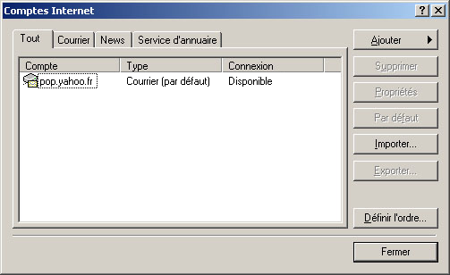 Click "Ajouter" then "Courrier...". A new window appears: 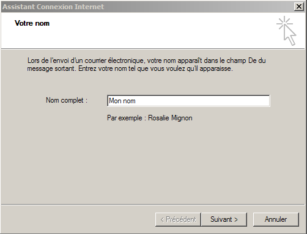 "Nom complet :" set "Mon nom". Cliquez sur "Suivant >". A new window appears: 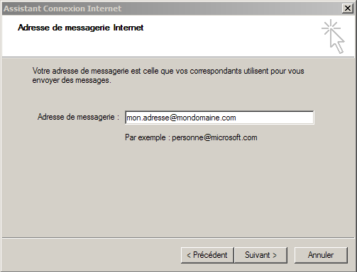 "Adresse de messagerie" set "mon.adresse@mondomaine.com". Click "Suivant >". A new window appears: 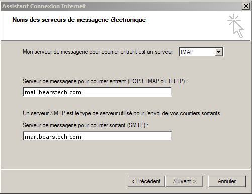 Select "IMAP". "Serveur de messagerie pour courrier entrant (POP3,IMAP ou HTTP) :" set "mail.bearstech.com". "Serveur de messagerie pour courrier sortant (SMTP) :" set "mail.bearstech.com". Click "Suivant >". A new window appears: 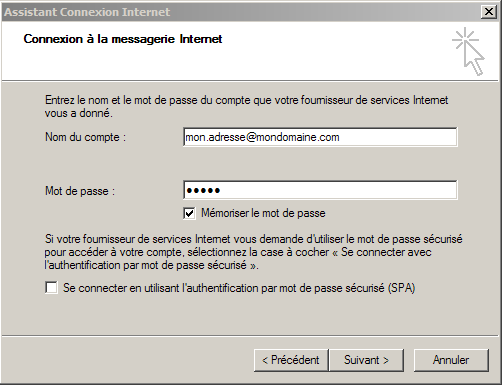 "Nom du compte :" set "mon.adresse@mondomaine.com". "Mot de passe :" set "a1b2c" qui sera masquée. Click "Suivant >". A new window appears: 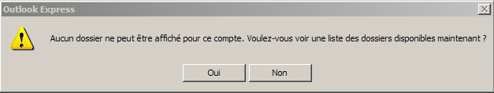 Click "Oui". Outlook is now configured to be used without cryptage. A new window appears: 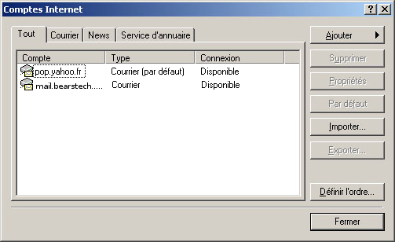 Select "mail.bearstech.com" then "Propriétés". A new window appears: 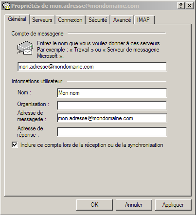 Renname "mail.bearstech.com" to "mon.adresse@mondomaine.com". Go to "Serveurs" tab: 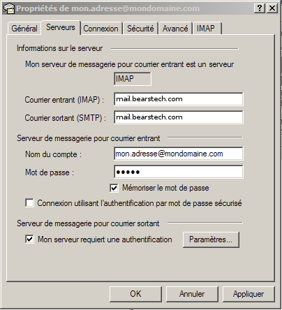 Select "Mon serveur requiert une authentification" Go to "Avancé" tab:
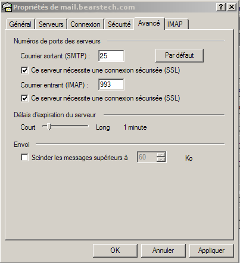 Select both boxes "Ce serveur nécessite une connexion sécurisée (SSL)" and set "465" to "Courrier sortant (SMTP)". Outlook is now ready and will use secured connections. Click "OK" on the bottom of the window. A new window appears: 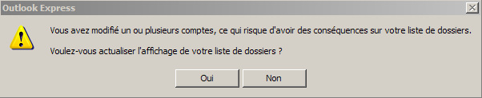 Click "Oui". |